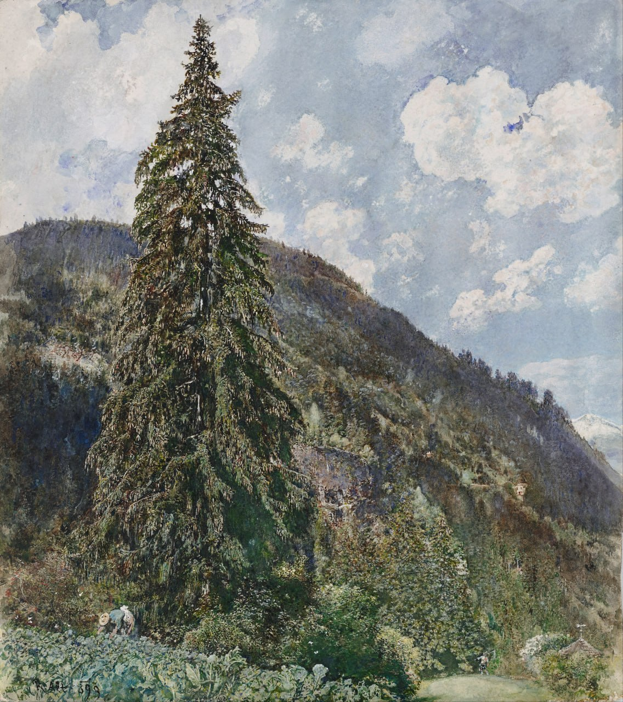

Рудольф фон Альт
Die alte Fichte in Bad Gastein (Старая ель в Бад-Гастайне), 1899

🏛 Музей Леопольда, Вена
С 1886 года Рудольф фон Альт (1812-1905) проводил лето в Гастайне, в провинции Зальцбург. Ему было 87 лет, когда он создал "Старую ель" в Бад-Гастайне. Дерево изображено во всём своём великолепии на фоне покрытого лесом горного пейзажа и занимает всю высоту картины. Маленькая фигурка женщины, работающей на капустной грядке на переднем плане, придаёт ели ещё более величественный вид, что также выражает глубокие чувства художника к природе. Художник-акварелист использует маленькие точки и тонкие мазки кисти для создания своих живописных элементов. Природа, кажется, сияет под ясным солнечным светом. Растворение поверхностей в воздухе и свете отражает интерес Альта к импрессионизму. Художник пользовался большим уважением и был назначен почётным президентом недавно основанного Венского сецессиона в 1897 году.
Происхождение
- {items}
Источник: https://onlinecollection.leopoldmuseum.org/en/object/3739-the-old-spruce-in-bad-gastein/